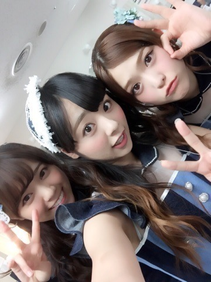
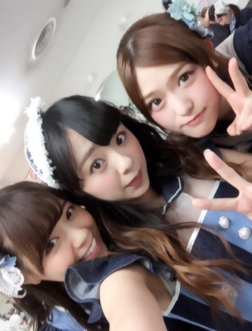
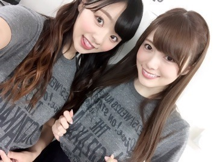
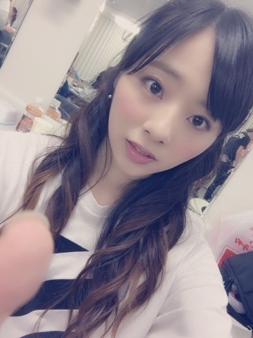

おつかれさまぁ♡
「真夏の全国ツアー」地方,無事にやり遂げましたぁぁ(o^^o)ノ
ラストは大阪. 大阪城ホール！
ということで大阪出身3人娘♡わぁ.
なあまにさゆりん

もぉ1枚.♡

子供の頃,初めて行ったコンサートが大阪城ホールでした.
まさか自分がその場所に立てる日が本当に来るなんて... ぁあ. 不思議ですね...♡
やっぱり地元は特別でした...♪(´ε｀ )
始まる前1番緊張するのは大阪.
でも始まっちゃえば緊張よりも、「楽しいぃ.」って気持ちが圧勝♡ノわら
大阪.来てくださった皆様,ありがとうございました！ 本当に大阪らしい,とりあえず皆声出そーって感じで,めっちゃ盛り上がったLIVEになりました*\(^o^)/*
『ほんまにありがとぉ～.』やね♡
大阪,Rotty夢多い♡
うれちかった. ありがと.
大阪Tシャツぅぅ.
まにまい

もぉ1枚♡
ちなみにこれの色違で,水色も可愛いよん.＊
ということで,ラスト,東京,神宮本当楽しんで行こ♡ ね♡？

まに。